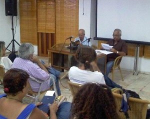
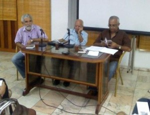

Par: Camilo García Lopez-trigo.
Las Soirées de poésie que organizan mensualmente El Festival Internacional de Poesía de la Habana y la Asociación de Escritores en la sala Rubén Martínez Villena de la UNEAC siempre nos reservan un momento para disfrutar de buena literatura contemporánea cubana. Alex Pausides, creador y organizador de este espacio, nos recuerda que en este año han pasado por allí poetas de la trascendencia de Nancy Morejón, Georgina Herrera, César López, Lina de Feria y otros.
El encuentro del pasado viernes 18 de octubre nos trajo una propuesta sugerente: los autores Iván Gerardo Campanioni y Alberto Marrero, dos poetas a quienes el mismo Alex valoró de “distintos en su estilo, pero con puntos de coincidencia en su fuerte compromiso con lo real y lo cotidiano” de nuestro país. Destacó que ambos “manejan con mucho dominio y sagacidad ese elemento tan maleable y vigoroso que es la palabra”.

- Viernes de Poesía. (de gauche à droite) Alex Pausides, Iván Gerardo Campanioni y Alberto Marrero

- Viernes de Poesía. (de gauche à droite) Iván Gerardo Campanioni y Alberto Marrero
Iván Gerardo Campanioni, la metáfora recorre otros caminos
“Hoy amanecí con ganas de aplaudir
y aplaudí por aquello
por esto y por lo otro (…)
Aplaudí tanto
que las manos no podía moverlas
de tantos aplausos que habían en la habitación
Abrí de par en par las ventanas
y los aplausos salieron volando
llenando el mundo de palmadas”
Aplausos“A esta poseía se le ha reprochado su desatención de la metáfora. En effet, mientras el texto lezamiano es una incesante progresión metafórica, esta poesía parece desdeñar ese tropo central, tan importante para algunos poetas vanguardistas. Lo interesante de los textos de Campanioni es que busca el efecto que podría producir la metáfora a través de otros caminos del lenguaje”. Así lo considera Guillermo Rodríguez Rivera en el prólogo al libro de Campanioni La Criatura (Editorial José Martí).
Al presentarle en la tertulia, Alex destacó que el autor estuvo “desaparecido de las librerías y las lecturas” hasta la aparición del referido libro en 2009, donde demostró ser un poeta de “enorme eficacia” con textos que “ha ido encumbrando hacia el exceso de palabras”, para convertirla en una “poesía realmente esencial”.
Y así lo demostró al leer poemas como Máscara y Careta, La virgen decapitada de la Calzada de Carlos III, Ilusiones, La década prodigiosa y muchos otros, que denotaron un lenguaje directo, crítico, con fino humorismo y descarnada ironía, áspero en ocasiones, dejando al desnudo las crudezas de la realidad cotidiana, las verdades y las mentiras humanas, las dobleces, los silencios.
Recordó también sus inicios por los años 60, desde la Brigada Hermanos Saíz –precursora de la AHS–, cuando tuvo la oportunidad de compartir con grandes de la literatura cubana en ese mismo lugar que ahora ocupa la sala Villena y entonces era una librería que dirigía Rodríguez Feo. Sobre su “desaparición” de los espacios literarios, refirió que no se amilanó y siguió escribiendo, de cuyo proceso surgió su poema “Ave Fénix”.
Iván Gerardo Campanioni (San Cristóbal, Pinar del Rio, 1942) Fundador de la Asociación de Jóvenes Rebeldes, la UJC y la Brigada Hermanos Saiz. Poeta firmante del manifiesto Nos pronunciamos, publicado en la primera salida de Le Cayman barbu dans 1963, sus poemas aparecieron en el volumen Cinco jóvenes poetas publicado por la UNEAC en 1965. Trabajó en el periódico Hoy, del Partido Socialista Popular, y en el diario Granma, del PCC. Sus poemas han sido publicados en las revistas Unión, Casa de las Américas, Le Cayman barbu, La Gaceta de Cuba, Parmi d'autres. Dans 2006 fue distinguido en el Concurso Regino Pedroso de la CTC.
Alberto Marrero, la metafísica de lo cotidiano
“Un día me percaté que estaba solo.
Debió ocurrir a principios de los setenta
cuando mi madre anunció que no habría
arroz por largo tiempo
y yo descubría que Homero era ciego y memorioso,
Poe impotente y Nietzsche sifilítico,
y entonces comencé a usar ropa reciclada
que poco a poco iba heredando de mi padre.”
Un díaMás visible en la vida literaria, Alberto Marrero cautivó a los presentes con la lectura de varios de sus poemas como Bote Rojo, Promontorio, Lo perdido, Un día, Tiempo cero de Italo Calvino, Parmi d'autres. Poema tras poema dejó ver un acercamiento más intimista como testigo de la realidad circundante, con mayores regodeos y motivos recurrentes de la historia y la cultura universal, con la confesión de que a veces se trata de “buscar la metafísica de lo cotidiano”.
Al presentarle, Alex Pausides destacó la forma en que Marrero asume los temas de la contemporaneidad, que incluye la política, el peligro, las guerras, la supervivencia, las complejidades de la más cercana realidad cubana, que “merecerían una atención mucho más pronunciada de la crítica nacional, como elemento activo en la formación del gusto literario” de la población.
Alberto Marrero Fernández (La Havane, 1956) es poeta y narrador. Publicó su primer poemario en 1986 con el título Inclinación de la balanza. Desde entonces ha publicado varios libros y ganado numerosos reconocimientos, Parmi eux: Mención en el concurso Julián del Casal –de la UNEAC– en 1991 avec La salvación y el eclipse y Premio de poesía en el mismo concurso de 2009 avec El límite del tiempo abolido, el Primer Premio del concurso de poesía Regino Pedroso de 2001, el Premio Nacional de Narrativa Hermanos Loynaz de 2003 con su libro Último viento de marzo, el Premio de cuento del concurso Luis Rogelio Nogueras –del Centro del Libro y la Literatura de La Habana– de 2004 avec Los ahogados del Tiber y Premio de cuento de La Gaceta de Cuba de 2009.